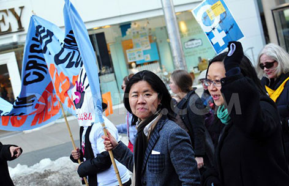
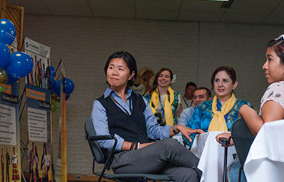

Job Search Workshops (JSW)
Job Search Workshops (JSW) help newcomers develop job-searching skills, tools and understanding of the Canadian labor market. The workshops are 3-4 days in length at no cost to the participant. Workshops topics include:
- Orientation to the Canadian Labour Market
- Self-Assessment of Skills
- Effective Resume- and Cover Letter Writing
- Application Forms
- Networking and Techniques for Contacting Employers
- Successful Interview Techniques
- Overview of the Workplace
- Workers’ Rights and Employment Standards
Ontario Works Placement Program
Ontario Works Placement Program provides clients who are on social assistance with the following services:
- Employment assessment for clients during intake, including identification of goals and career planning
- Job search instruction workshops for five days focusing on job search skills, knowledge and building of confidence to undertake an effective job search
- One-to-one counselling based on client’s needs and goals to ensure job search readiness
- A back to work action plan, professional resume and a cover letter
- Extensive support and coaching for clients during job search and interviewing process
- Job matching with employers who have identified vacancies
- 3 to 5 months follow up with clients to monitor and ensure employment success
WWCC offers this program at two of its locations:
Bloor West Main Office & North York East Centre
